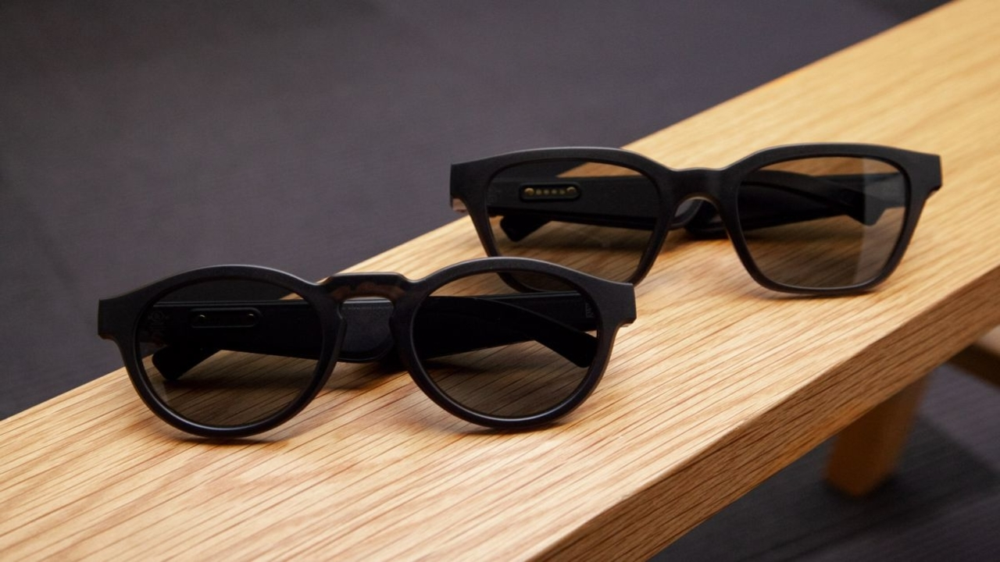

We all know the American company BOSE. The first few things that come to our mind are music, sound, music systems and similar stuffs. But have you all wondered about sunglasses while hear BOSE? If you all have not, then from now you all will. Many people like to wear sunglasses and listen to music. But wonder if these two things come together. These things come together at BOSE Frames.
BOSE Frames are sunglasses with soundtrack. They did not compromise in any of its quality. BOSE Frames give us good quality in both the sunglasses and the soundtrack. Let us explore its features.
BOSE Frames are available in two shapes:
BOSE Frames ALTO and BOSE Frames RONDO.
BOSE ALTO are the rectangular shaped frames and available in 3 sizes S/M Global Fit and M/L whereas BOSE RONDO are the circular shaped frames available only in 1 size S/M.
BOSE FRAMES have a peculiar shape. Its handles are very much wide which is fitted with the BOSE miniaturised music speakers which appear just in front of your ears when you put in the sunglass. The position of the speakers are in such a way that apart of being in front of the ears it enables only the person who wears the glasses to listen to the music and not the person who sits beside. So, you all can use it in public places without disturbing others. Other than that, its body is made of subtly transparent nylon which gives the frame a premium look. Its hinges are made of stainless-steel which is a hard alloy and it is also plated in gold. The hinges are also scratch resistant. The sunglass lens are tinted in such a way that it blocks up to 99% UVA/UVB rays from the sun and protect your eyes.
The BOSE Frames have extraordinary speakers which are in miniaturized form so that no one else around can hear the music. But the small size does not compromise on its sound quality. It gives amazing and loud sound to the person who wears the sunglasses.
The BOSE Frames uses Bluetooth wireless technology to connect to devices. It comes with AC cables which are only specific to the BOSE Frames but not adapter. The BOSE Frames have easy to use design. It has one button control which allows turning on/off the power supply, accept/reject calls, play/pause music and access Siri or Google Assistant. It also has gesture control features which can increase or decrease the volume and play the next or previous music without using the mobile by just looking left and right while holding on the button.
The BOSE Frames are available in Rs.21,900.
If you all want to know more then you all can visit the official BOSE website for BOSE Frames.